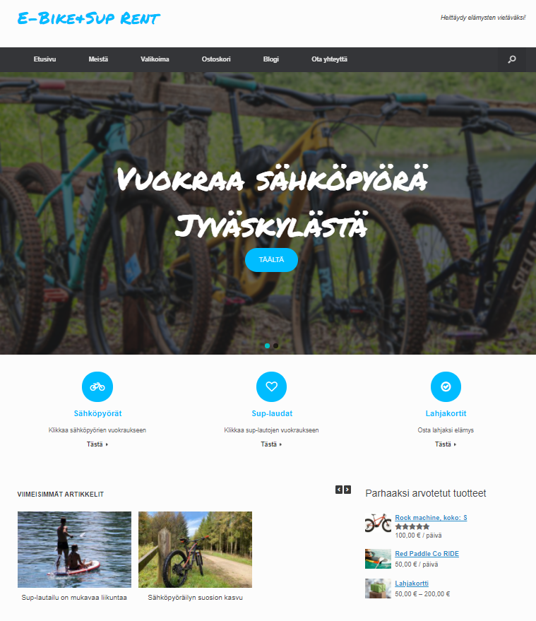

Koulutusten tuotoksia
Datan esikäsittely -opintojakson tehtävät ja harjoitustyö (3/2023)
Linkki GitHubiinData-analytiikan ja koneoppimisen käytänteet -opintojakson ryhmätyötehtäviä (2/2023)
Linkki GitHubiinJohdatus data-analytiikkaan ja tekoälyyn-opintojakson harjoituksia. (2/2023)
Linkki GitHubiinOpetusvideo: Tallenna tietoa AppGyver apista Backendless tietokantaan. (7/2022)
Linkki YoutubeenEsittely- ja demosivu liittyen raporttiin AppGyver Composer Pro - oheistyökalut. (6/2022)
Linkki tiimin sivuilleResponsiivinen portfolio-sivustoni, HTML ja CSS. (Web-tekniikat, 12/2021)
Linkki GitHubiinRetkeilyaiheinen sovellus parityönä Node.js:llä ja Express:llä + MongoDB. (Fullstack ja Web-tekniikat, 12/2021)
 Linkki GitHubiin
Linkki GitHubiin
Sähköpyörien ja sup-lautojen vuokraussivusto Wordpressillä (Web-julkaisujärjestelmät, 11/2021)
 Linkki GitHubiinMySQL-tietokantaratkaisu Keski-Suomen uimarannoista parityönä (Tietokannat-kurssi, 8/2021)
Linkki GitHubiinIhka ensimmäinen ohjelmani. Kysy&vastaa-peli Pythonilla (Ohjelmoinnin perusteet, 8/2021)
Linkki GitHubiin